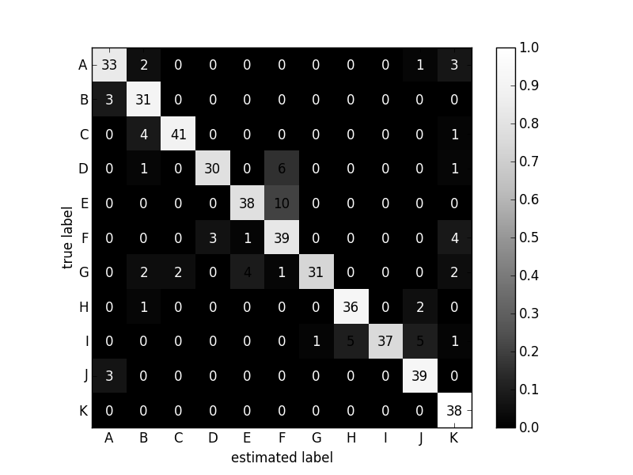

混同行列の可視化
混同行列ってClassificationの結果を可視化する際に使いやすいのだけど、 いろいろ情報を載せようと思うと、毎回どう書いたらいいか悩んでしまう。
備忘録の意味も込めてメモ。
コード中にもあるようにメインの部分はStackOverflowの回答に沿っている。 混同行列の図中に濃淡だけではなく具体的な数値も載ってるのが使いやすいポイント。 元の回答はjetのColormapだったが、そこはGrayScaleに変換。 それに伴い、数字の色を変化させたのは私の寄与。
以下Gistより

こんな感じでよろしいでしょうか。